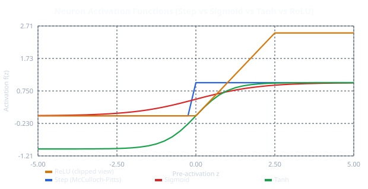
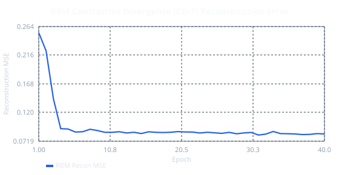
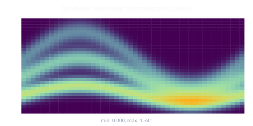
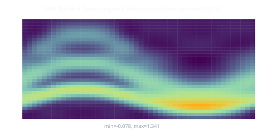

{
"receptiveField5Layer": 18,
"svdRank4Error": 0.07172785598657103,
"svdRank8Error": 0.0032909847926218595,
"gradientCheckMaxRelativeError": 2.7529094067190867E-8,
"gradientCheckNumParams": 91,
"gradientCheckPassed": true,
"optimizerValAcc": {
"BATCH_GD": 0.9833333333333333,
"SGD": 1.0,
"MOMENTUM": 1.0,
"NESTEROV": 1.0
},
"hebbianFinalNorm": 1.998623694853295E8,
"ojaFinalNorm": 1.0000659623667507,
"ojaPrincipalComponentAlignment": 0.999902835027147,
"competitiveInitialQError": 1.1195288212896668,
"competitiveFinalQError": 0.45370506731132443,
"deltaRuleInitialMse": 1.635611767308356,
"deltaRuleFinalMse": 2.0867174705130733E-15,
"rbmInitialReconMse": 0.25370688621626564,
"rbmFinalReconMse": 0.08399390524280333,
"hopfieldInitialEnergy": -1.0,
"hopfieldFinalEnergy": -3.0,
"hopfieldRecoveryAccuracy": 1.0,
"cremaRealMlp": {
"status": "COMPLETED",
"trainSamples": 4983,
"valSamples": 1230,
"testSamples": 1228,
"parameterCount": 17158,
"testAccuracy": 0.504885993485342,
"testUAR": 0.5070924517998908,
"testMacroF1": 0.5051863496702497
}
}